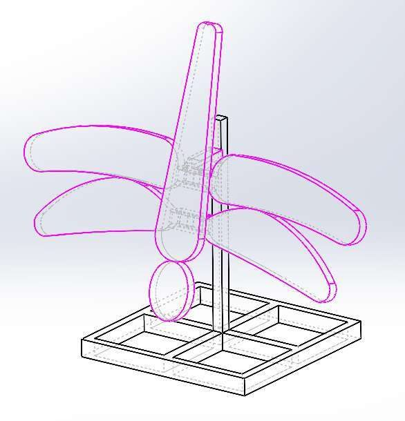
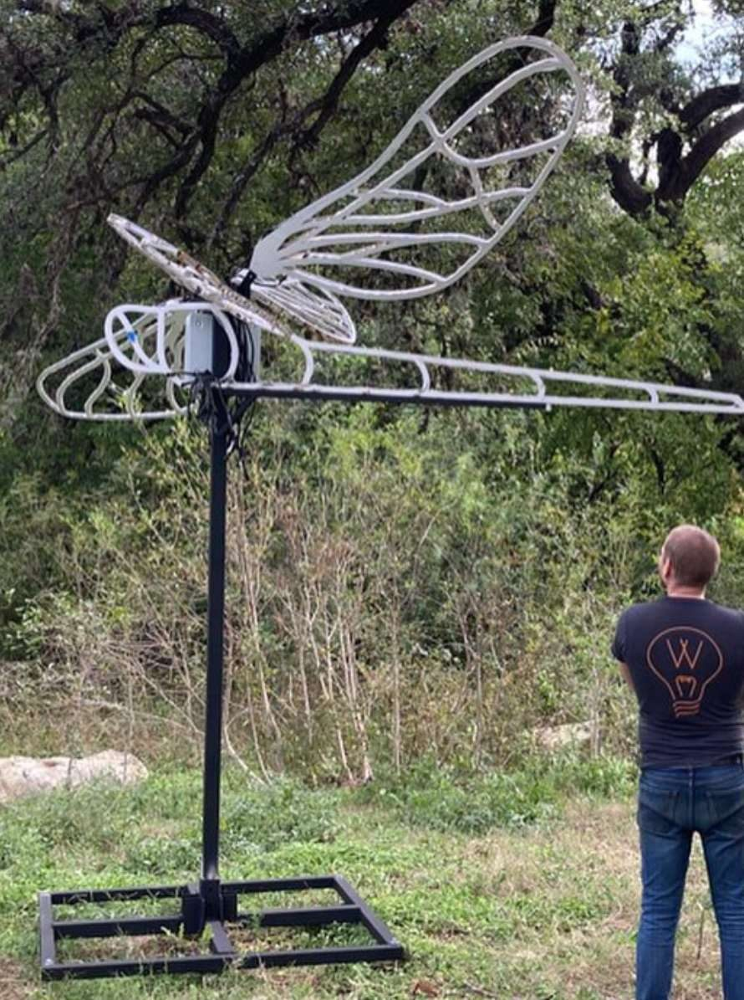
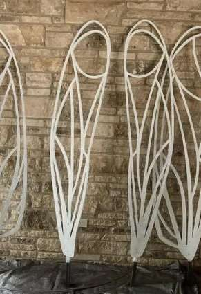
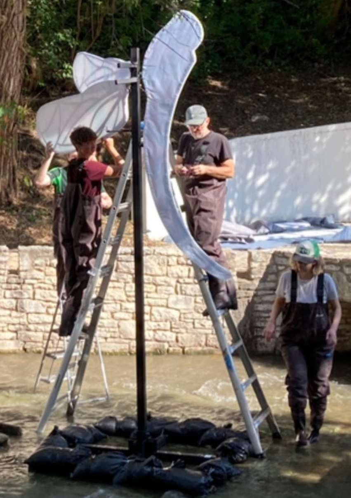
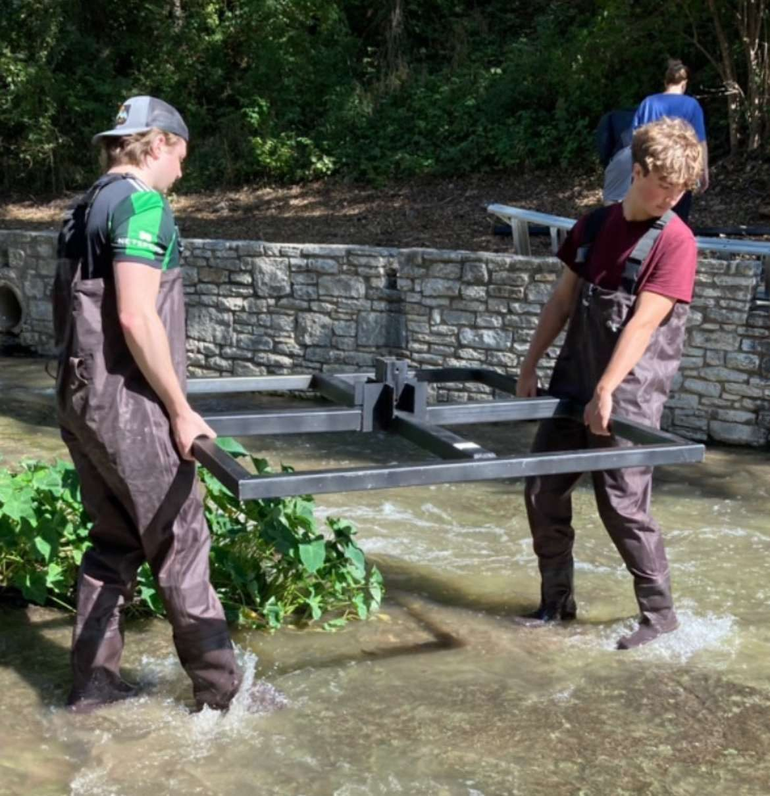
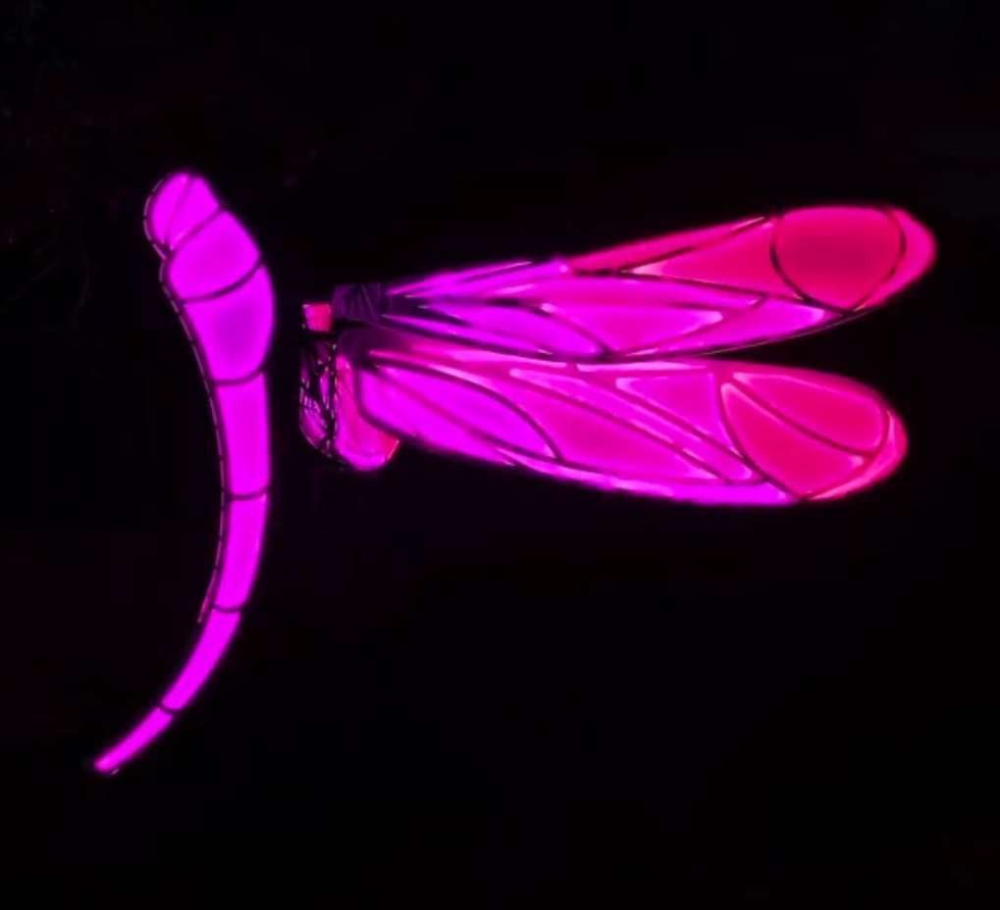

Austin Creek Show Dragonflies
Every fall, Austin's Creek Show installs large-scale illuminated art over Waller Creek. I designed and led fabrication of four metal dragonfly sculptures with wingspans over 14 feet, taking them from artist sketches to engineered structures that stood in a live creek for a month of public display.
From Artist Sketches to CAD
Working from client and artist drawings, I designed four unique CAD assemblies in SolidWorks through extensive iteration and prototyping. Each dragonfly got its own wing geometry, mast, and creek-bed mounting structure.


Fabrication
I led full-scale fabrication: eight unique wing designs laser-cut via Fusion 360 CAM, over 200 welded joints, soldered wiring for four LED display systems, and water-resistant electronics packaging that kept everything lit above the water.


Engineering for Wind and Floods
A sculpture standing in a creek has to survive flash floods. Using FEA in SolidWorks Simulation and ANSYS plus dimensional analysis, I reduced peak current-induced forces on the creek structures by 30%, which made the installation much more resilient to high wind and flooding.

The Final Show
All four dragonflies flew for the full run of Creek Show, lighting up the creek for thousands of visitors every night.


Top Skills Utilized
- SolidWorks
- ANSYS
- MIG Welding
- Fusion 360 CAM
- Laser Cutting
- Electronics Packaging